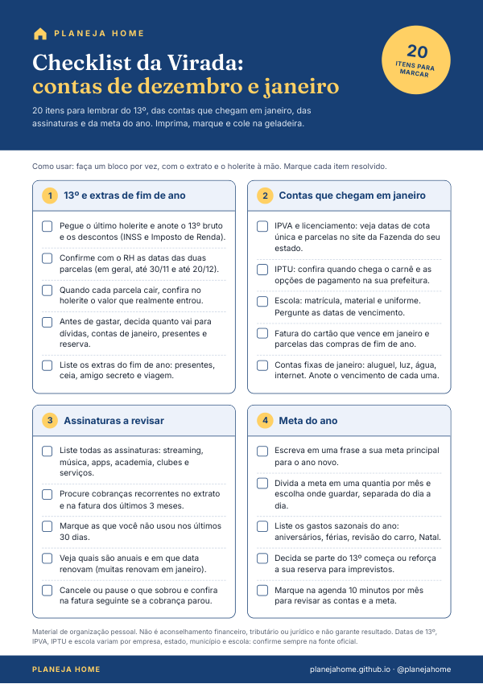

Checklist da Virada: contas de dezembro e janeiro
Um PDF gratuito para imprimir, marcar e colar na geladeira. Você recebe por e-mail:
- 20 itens organizados em 4 blocos: 13º e extras de fim de ano, contas de janeiro, assinaturas a revisar e meta do ano;
- Lembretes de datas comuns, como as parcelas do 13º, IPVA, IPTU e escola, para você confirmar na fonte oficial;
- Um passo a passo curto, para fazer um bloco por vez com o extrato e o holerite à mão.
Receba o checklist no seu e-mail
Seu e-mail fica só com a gente. Sair é um clique. Política de Privacidade